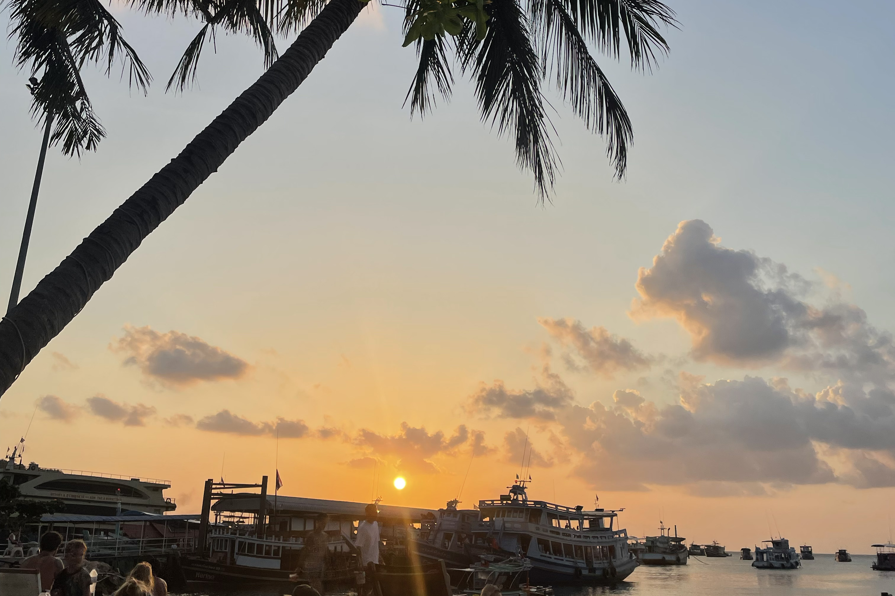

Wir glauben an sanften Tourismus, Nachhaltigkeit und echte Begegnungen. Unsere Touren sollen die Natur respektieren, das Wissen der Insel erhalten und lokale Anbieter stärken.
Deshalb arbeiten wir eng mit Umweltpädagog*innen, Meeresbiolog*innen und lokalen Shops zusammen – für ein authentisches Erlebnis.
